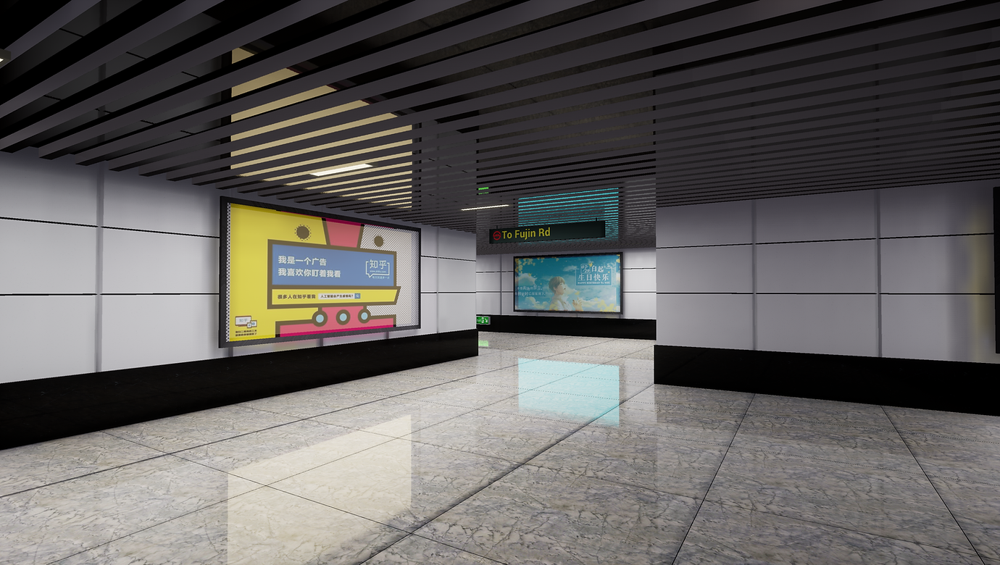
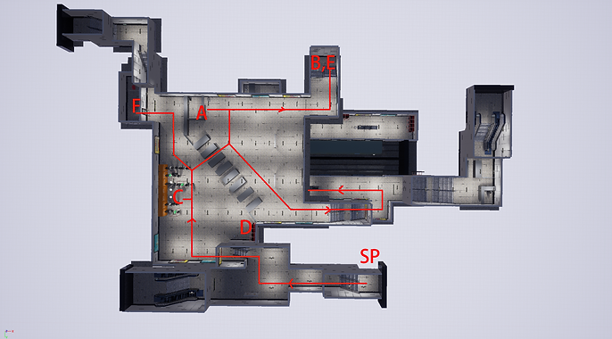
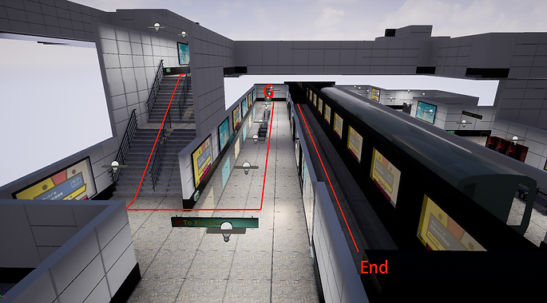
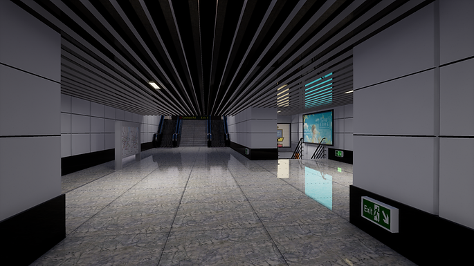
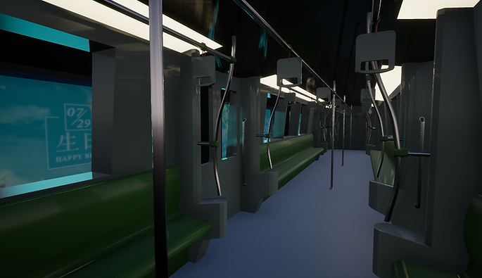

Subway Station
Subway Station

This is a subway station I made using Unreal Engine. This station is inspired by Caobao Rd subway station in Shanghai. The level is made as part of a single player action adventure game, where players know there is a secret passageway on the track of this subway station from the previous mission, and players need to find a way to enter it. In the level, players need to talk to other NPCs, gather clues, and collect items to complete the mission and proceed. The character controlled by players does not have special abilities, so the subway station is designed rather realistic. In addition, the game takes place in the modern era, so the material and texture I'm using are also realistic.
Design Process
Originally the level has two phases: the first phase is the current level, and the second phase is after players entered the secret path and explored the abandoned station. The second half would happen in a much darker place and have more action element. The second half was discarded because the scope is too big for me to finish it on time. I changed the mission in the first half and added a dialogue system to extend the duration of the first phase. When designing the layout of the level, I want to keep the original layout from the actual station as much as possible while serves the mission at best. Thus, I followed gated hub layout templates from level design workshop GDC talk. In the level, players can explore freely after they enter the station, but there are several locked rooms players cannot access at first, so they need to find a way to solve this puzzle. Although it is a linear mission, the fact that players gather information from every major area of the subway station make the experience less linear, and the mission is short enough so that players won't feel they are forced to walk back and forth in the same scene.
In terms of the art pass, I made most of the models, including all the walls, subway trains, advertisement board, and lights. I followed the modular level design principle from "Fallout 4" development team and create a modular kit for all the wall tiles, staircases and so on. With this modular kit, I was able to construct this level efficiently. As the level grew bigger, so did my modular kit, I added corner pieces and various kind of walls to create more kinds of room and hallway, and I am really satisfied with the result. Lighting is one major issue I encounter in the late stage. Since my level is an underground station, so there is no directional light in the level. Thus, I have to rely on point light and ambient light. I spent a couple of hours to re-create the real light in the scene. I also use emissive material to make the emergency exit and advertisement board light up. Overall I am satisfied with the result.
I'll definitely keep working on this level in the future. Adding back the second half the level is the first thing I want to do, although it does take a lot of time to finish. In addition, I will keep iterating on the level design to improve the experience. Furthermore, the material will be updated as well. Right now the level is too clean to be real, so I need to make the material "dirtier" and add some little props into the level.
Critical Path
Players can explore freely in the level, but the mission requires players complete several tasks in a certain order.


SP - Starting position
A - Talk to the staff, and he will tell you he lost a key
B - Go downstairs, find a beggar and talk to him. He will give you the key if you buy him a drink
C - Talk to people who are buying tickets, one of them will give you some money
D - Go to the vending machine, use the money you just get and buy a drink
E - Return to the beggar, give him the drink and get the key
F - Go to the changing room, use the key to open the door and get the uniform
G - With the uniform, players can go pass the staff and the door to go on the track
End - The end supposed to be a secret entrance to an abandoned station beneath, which is not included in this level.
Additional Screenshots

